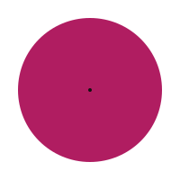
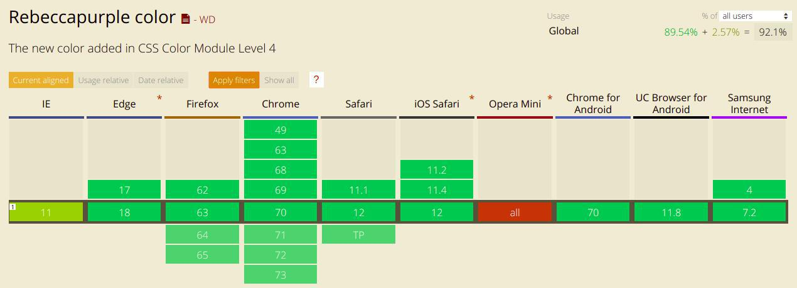

Цветовая модель — это математическая система, описывающая как цвет может быть представлен в цифрах
rgb(0, 1, 234)
#EEEE11
#3B1C5A
hsl(90, 50%, 50%)
hsl(222, 90%, 70%, .5)
Зелёный противоположен красному?
First Public Working Draft
color: hwb(30, 10%, 8%);
color: lab(55.3 83.1 15.0 / 75%, #F06);
color: lch(55.3 84.5 10.25, #F06);
color: color-mod(#937b19 contrast(25%));
color: color-mod(var(--base-color) tint(59%));
color: color-mod(purple lightness(62%) red(218) whiteness(25%));
color: device-cmyk(0, 81%, 81%, 30%);
color: rebeccapurple;
